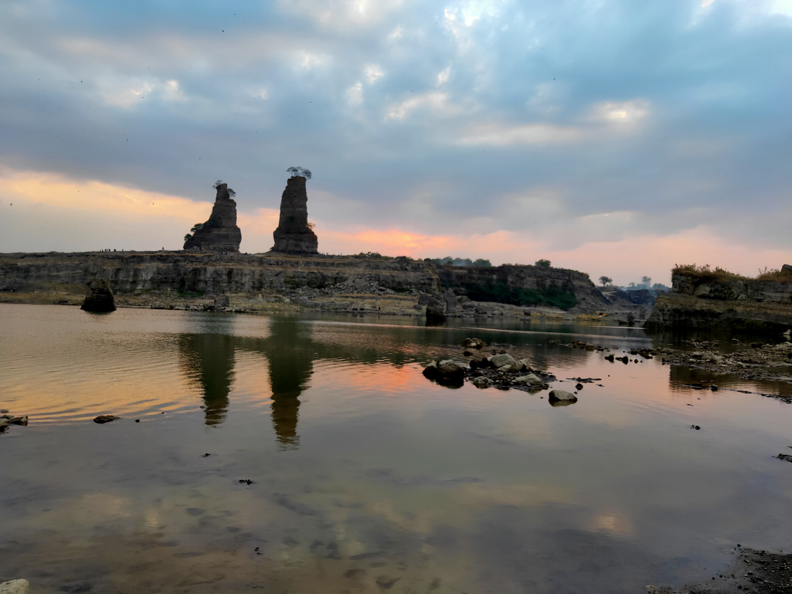
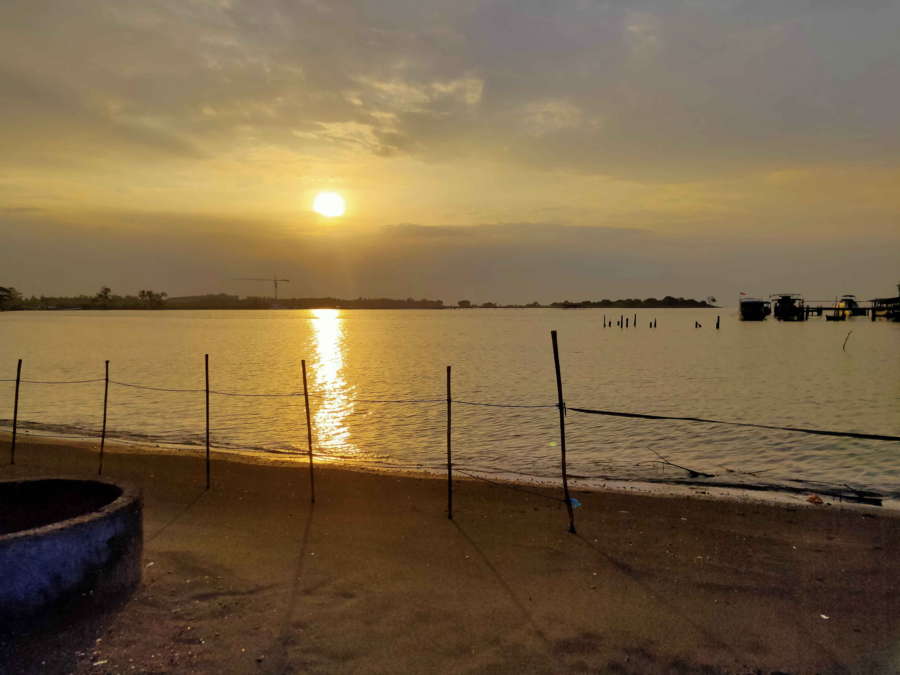

Curug Lawe Semarang
Curug lawe adalah sebuah air terjun,sesuai dari arti kata curug yang berarti air terjun. Biasanya banyak orang yang mengujungi curug tersebut dengan memilki berbagai alasan misal saja untuk menikmati suasana dingin,jogging,menikmati jalur menuju curug. jarak antara parkiran dengan curugnya cukup jauh sekitar 2 km maka dari itu banyak orang yang kesini dengan tujuan untuk jogging yang disuguhi pemandangan alam yang sangt natural,alami serta memilki udara yang sejuk.Tentang Curug Lawe
Alamat : Jalan.Desa Kalisidi, RT.01/RW.06, Indrakila, Lerep, Kec. Ungaran Bar., Semarang, Jawa Tengah 50519 Tiket Masuk : Rp 10.000/orang Buka : 08.00 - 14.00 (wib) Tentang : Curung lawe merupakan salah satu curug yang terletak tak jauh dari perkotaan,sehingga biasanya pada hari sabtu dan minggu banyak wisatawan yang berwisata. Untuk tiket masuk ke curug ini bisa di bilang cukup terjangkau,cuman medan yang dilalui saat menuju ke curugnya berkelak-kelok sehingga sebaiknya lebih berhati-hati. an jangan lupa untuk membawa air putih serta jajanan,tetapi apabila lupa disana juga banya orang yang berjualan minuman dan makanan.

Piramida Rowosari Semarang
Piramida rowosari semarang merupakan sebuah tempat wisata yang mungkin bisa digunkan untuk menguji mental anda,karena sepertinya bangunan ini sudah lama ditinggalkan oleh si pengelola. Tetapi ternyata dibalik bangunan yang sudah lama tidak di rawat,tetapi apabila kita masuk dan berada di puncak piramida nya maka kita akan takjub dengan pemandangan yang disuguhkan piramida kepada kita,apalagi kita menikmati nya di saat matahari terbit maupun terbenam. Mungkin anda akan rindu suasana saat berada di puncak piramida rowosari.Tentang Piramida Rowosari Semarang
Alamat : Jalan.Rowosari, Kec. Tembalang, Kota Semarang, Jawa Tengah 50279 Tiket Masuk : Gratis Buka : 10.00 - 15.00 (wib) Tentang : Piramida rowosari merupakan bangunan lama,tetapi memiliki pemandangan yang menakjubkan. Saat kita hendak kesana sebaiknya pastikan motor anda dalam keadaan baik,karena untuk medannya lumayan ekstream. Ekstreamnya berupa tanjakan dan bebatuan,tetapi saat setelah sampai rasa lelah kita akan terbayar lunas. Untuk lokasi bangunan ini kesanya seperti tersembunyi dari perkotaan jadi bagi anda yang suka mendatangi wisata horor ini mungkin bisa jadi refrensi untuk anda.
 Brown Canyon Semarang
Brown canyon merupakan tempat bekas penambangan tanah yang sekarang mungkin bisa menjadi objek wisata,tempat ini bisa dikatakan mirip dengan grand canyon yang ada di amerika,dikatakan mirip karena di brown canyon sendiri juga memiliki bukit yang berbentuk seperti tebing-tebing yang curam. Tempat ini cocok untuk anda kunjungi bila saat matahri terbit atau terbenam karena memiliki pemandangan yang indah. Selain pemandangan yang indah,tempat ini juga menyediakan fasilitas tanah berpasir yang mungkin anda dapat digunakan bagi anda yang suka offroad.Tentang Brown Canyon Semarang
Alamat : Jalan.Rowosari, Kec. Tembalang, Kota Semarang, Jawa Tengah 50279 Tiket Masuk : Gratis Buka : 24 jam Tentang : Brown Canyon merupakan bekas penambangan tanah yang ada di rowosari yang memiliki keindahan. diantaranya bukit yang menyerupai tebing,suasana pagi hari/siang hari yang indah,jalan berpasair bagi anda yang suka offroad. Sebelum anda datang ke sini pastikan bahwa kendaraan anda dalam keadaan baik. karena untuk medanya sendiri/jalunya diselimuti pasir karena mengingat tempat ini bekas tambang tanah.

Pantai Tirang dan Pantai Marina
Pantai tirang dan pantai marina merupakan pantai yang terletak tak jauh dari kota semarang,pantai ini cocok dikunjungi di saat pagi hari/sore hari. Dahulu pantai marina adalah hutan bakau dan tambak,tetapi sekarang pemerintah Kota Semarang merubahnya menjadi objek wisata dan rekresi dengan melakukan reklamasi daratan sedangkan pantai tirang merupakan pantai yang letak nya di dekat bandara ahmad yani yang lama,jadi tak heran sampai sekarang pun masih banyak pesawat yang sering melintasi di atas pantai tirang. dahulu pantai tirang masih banyak ditemukannya banyak sampah,tetapi sekarang banyak inisiatif dari masyarakat untuk membersihkan pantai dari sampai sehingga sampahnya sudah berkurang,tidak seperti dahulu.Tentang Pantai Tirang dan Pantai Marina
Alamat Pantai Tirang : Jalan.perumahan graha padma,semarang Alamat Pantai Marina : Jalan. Tawangsari, Kota Semarang, Jawa Tengah Tiket Masuk Tirang : Rp 5.000/orang Tiket Masuk Marina : Rp 10.000/orang Buka Tirang : 06.00 - 20.00 (wib) Buka Marina : 06.00 - 20.00 (wib) Tentang Marina & Tirang : Pantai marina dan pantai tirang memiliki suasana yang berbeda,apabila pantai marina untuk jalurnya sendiri sudah bagus. Sedagkan pantai Tirang untuk jalurnya sendiri masih berpasir sehingga anda harus sedikit lebih berhati-hati. Kedua pantai ini menyuguhkan pemandangan yan indah,jadi tak heran saat hari weekend pantai ini dipadati oleh wisatawan. Untuk harga tiketnya pun masih< terjangkau. Jadi menurut saya pantai ini patut di rekomendasikan apabila anda ingin menikmati suasana senja.